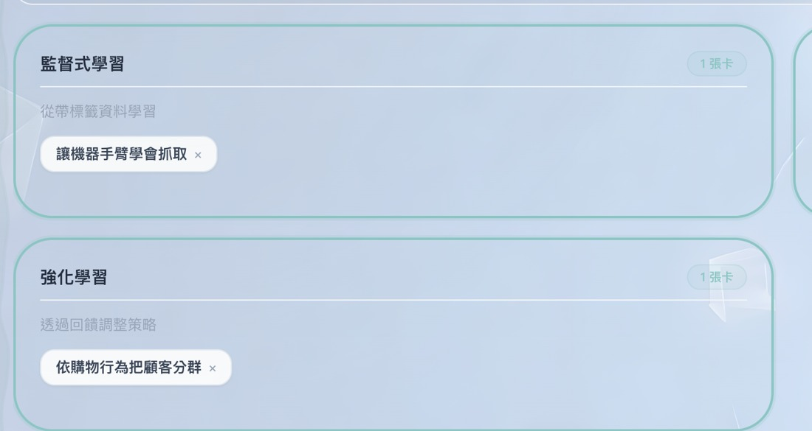

Learn8
以無盡內容與個人化學習為核心的
AI 教育生態系
AI 教育生態系

學習
不缺內容，
不缺內容，
缺的是理解。
你到底哪裡不會？
……我也不知道。
答案很好拿，卡住的地方沒人看見。
25.84%
偏遠國小每 4 位老師
就有 1 位是代理
就有 1 位是代理
2.1倍
偏遠國中教師流動率
老師一換，理解歸零
老師一換，理解歸零
資料：立法院預算中心〈111 年度單位決算評估報告〉，111 學年度；全國國小 16.58%
想學什麼，課就長成什麼。
4
優質教育
QUALITY EDUCATION
題型自動對應學科

圍棋 → 棋盤

資料結構 → 動手操作

AI 概念 → 分類卡
每個學生的課，都為他重新規劃
1診斷問卷摸清程度與學習風格
2雙代理人AI 規劃、AI 審查
3知識地圖一關一關解鎖
4補救閉環答錯即補救，搞懂才前進
教師編輯器
上傳講義・調整難度
一鍵換題型
一鍵換題型

競技場 Arena
Elo 排位即時對戰
練習就是競賽，
競賽就是練習。
競賽就是練習。

Neuro Link 即時理解
不是監控，而是更早理解。
① 配戴頭帶② 讀取腦波③ 主動調整
組員 范愷鈞・沈晨利・楊詠恩・羅云駿
指導教授 楊傳凱
指導教授 楊傳凱
為每個學生，長出他需要的課